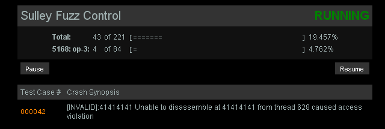
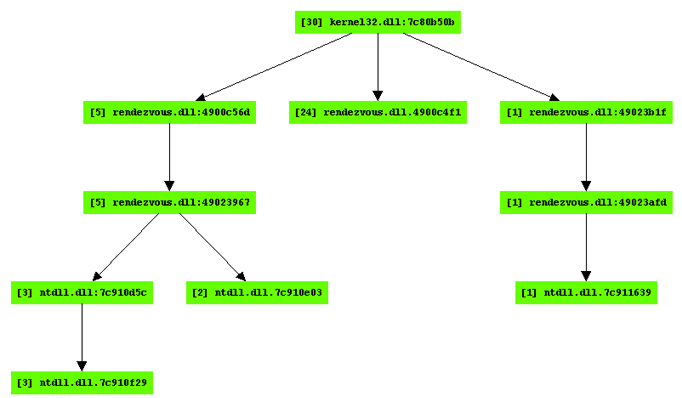
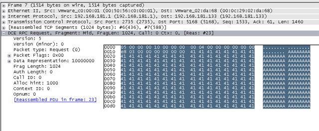

Sulley - Fuzzing Framework
Table of Contents
IntroductionSulley is a fuzzer development and fuzz testing framework consisting of multiple extensible components. Sulley (IMHO) exceeds the capabilities of most previously published fuzzing technologies, commercial and public domain. The goal of the framework is to simplify not only data representation but to simplify data transmission and target monitoring as well. Sulley is affectionately named after the creature from Monsters Inc., because, well, he is fuzzy.Modern day fuzzers are, for the most part, solely focus on data generation. Sulley not only has impressive data generation but has taken this a step further and includes many other important aspects a modern fuzzer should provide. Sulley watches the network and methodically maintains records. Sulley instruments and monitors the health of the target, capable of reverting to a good state using multiple methods. Sulley detects, tracks and categorizes detected faults. Sulley can fuzz in parallel, significantly increasing test speed. Sulley can automatically determine what unique sequence of test cases trigger faults. Sulley does all this, and more, automatically and without attendance. Overall usage of Sulley breaks down to the following:
Sulley Directory StructureThere is some rhyme and reason to the Sulley directory structure. Maintaining the directory structure will ensure that everything remains organized while you expand the fuzzer with Legos, requests and utilities. The following hierarchy outlines what you will need to know about the directory structure:
AuthorsPedram Aminihttp://pedram.openrce.org Aaron Portnoy http://dvlabs.tippingpoint.com/team/aportnoy Sulley is additionally maintained and built upon by members of the TippingPoint Security Research Team. Installation and RequirementsFor simple data representation and transmission there are no requirements. However, the various monitoring components do have further needs:
Data RepresentationAitel had it right with SPIKE, we've taken a good look at every fuzzer I can get my hands on and the block based approach to protocol representation stands above the others combining both simplicity and the flexibility to represent most protocols. Sulley utilizes a block based approach to generate individual "requests". These requests are then later tied together to form a "session". To begin, initialize with a new name for your request:
s_initialize("new request")
Now you start adding primitives, blocks and nested blocks to the request. Each primitive can be individually rendered and mutated. Rendering a primitive returns its contents in raw data format. Mutating a primitive transforms its internal contents. The concepts of rendering and mutating are abstracted from fuzzer developers for the most part, so don't worry about it. Know however that each mutatable primitive accepts a default value which is restored when the fuzzable values are exhausted.
Static and Random PrimitivesLet's begin with the simplest primitive, s_static(), which adds a static unmutating value of arbitrary length to the request. There are various aliases sprinkled throughout Sulley for your convenience, s_dunno(), s_raw() and s_unknown() are aliases of s_static():
# these are all equivalent:
s_static("pedram\x00was\x01here\x02")
s_raw("pedram\x00was\x01here\x02")
s_dunno("pedram\x00was\x01here\x02")
s_unknown("pedram\x00was\x01here\x02")
Primitives, blocks etc. all take an optional name keyword argument. Specifying a name allows you to access the named item directly from the request via request.names["name"] instead of having to walk the block structure to reach the desired element.
Related to the above, but not equivalent, is the s_binary() primitive which accepts binary data represented in multiple formats. SPIKE users will recognize this API, its functionality is (or rather should be) equivalent to what you are already familiar with:
# yeah, it can handle all these formats.
s_binary("0xde 0xad be ef \xca fe 00 01 02 0xba0xdd f0 0d", name="complex")
Most of Sulley's primitives are driven by "fuzz heuristics" and therefore have a limited number of mutations. An exception to this is the s_random() primitive which can be utilized to generate random data of varying lengths. This primitive takes two mandatory arguments, 'min_length' and 'max_length', specifying the minimum and maximum length of random data to generate on each iteration respectively. This primitive also accepts the following optional keyword arguments:
IntegersBinary and ASCII protocols alike have various sized integers sprinkled all throughout them, for instance the Content-Length field in HTTP. Like most fuzzing frameworks, a portion of Sulley is dedicated to representing these types:
Strings and DelimitersStrings can be found everywhere. E-mail addresses, hostnames, usernames, passwords and more all examples of string components you will no doubt come across when fuzzing. Sulley provides the s_string() primitive for representing these fields. The primitive takes a single mandatory argument specifying the default, valid, value for the primitive. The following additional keyword arguments may be specified:
# fuzzes the string: <BODY bgcolor="black">
s_delim("<")
s_string("BODY")
s_delim(" ")
s_string("bgcolor")
s_delim("=")
s_delim("\"")
s_string("black")
s_delim("\"")
s_delim(">")
BlocksHaving mastered primitives, let's next take a look at how they may be organized and nested within blocks. New blocks are defined and opened with s_block_start() and closed with s_block_end(). Each block must be given a name, specified as the first argument to s_block_start(). This routine also accepts the following optional keyword arguments:
GroupsGrouping allows you to tie a block to a group primitive to specify that the block should cycle through all possible mutations for each value within the group. The group primitive is useful for example for representing a list of valid opcodes or verbs with similar argument structures. The primitive s_group() defines a group and accepts two mandatory arguments. The first specifies the name of the group, the second specifies the list of possible raw values to iterate through. As a simple example, consider the following complete Sulley request designed to fuzz a web server:
# import all of Sulley's functionality.
from sulley import *
# this request is for fuzzing: {GET,HEAD,POST,TRACE} /index.html HTTP/1.1
# define a new block named "HTTP BASIC".
s_initialize("HTTP BASIC")
# define a group primitive listing the various HTTP verbs we wish to fuzz.
s_group("verbs", values=["GET", "HEAD", "POST", "TRACE"])
# define a new block named "body" and associate with the above group.
if s_block_start("body", group="verbs"):
# break the remainder of the HTTP request into individual primitives.
s_delim(" ")
s_delim("/")
s_string("index.html")
s_delim(" ")
s_string("HTTP")
s_delim("/")
s_string("1")
s_delim(".")
s_string("1")
# end the request with the mandatory static sequence.
s_static("\r\n\r\n")
# close the open block, the name argument is optional here.
s_block_end("body")
The script begins by importing all of Sulley's components. Next a new request is initialized and given the name "HTTP BASIC". This name can later be referenced for accessing this request directly. Next, a group is defined with the name "verbs" and the possible string values "GET", "HEAD", "POST" and "TRACE". A new block is started with the name "body" and tied to the previously defined group primitive through the optional 'group' keyword argument. Note that s_block_start() always returns True which allows you to optionally "tab out" its contained primitives using a simple if-clause. Also note that the name argument to s_block_end() is optional. These framework design decisions were made purely for aesthetic purposes. A series of basic delimiter and string primitives are then defined within the confinements of the "body" block and the block is closed. When this defined request is loaded into a Sulley session, the fuzzer will generate and transmit all possible values for the block "body", once for each verb defined in the group.
EncodersEncoders are a simple, yet powerful block modifier. A function can be specified and attached to a block in order to modify the rendered contents of that block prior to return and transmission over the wire. This is best explained with a real world example. The DcsProcessor.exe daemon from Trend Micro Control Manager listens on TCP port 20901 and expects to receive data formatted with a proprietary XOR encoding routine. Through reverse engineering of the decoder, the following XOR encoding routine was developed:
def trend_xor_encode (str):
key = 0xA8534344
ret = ""
# pad to 4 byte boundary.
pad = 4 - (len(str) % 4)
if pad == 4:
pad = 0
str += "\x00" * pad
while str:
dword = struct.unpack("<L", str[:4])[0]
str = str[4:]
dword ^= key
ret += struct.pack("<L", dword)
key = dword
return ret
Sulley encoders take a single parameter, the data to encode and return the encoded data. This defined encoder can now be attached to a block containing fuzzable primitives allowing the fuzzer developer to continue as if this little hurdle never existed.
DependenciesDependencies allow you to apply a conditional to the rendering of an entire block. This is accomplished by first linking a block to a primitive it will be dependant on using the optional 'dep' keyword parameter. When the time comes for Sulley to render the dependant block, it will check the value of the linked primitive and behave accordingly. A dependant value can be specified with the 'dep_value' keyword parameter. Alternatively a list of dependant values can be specified with the 'dep_values' keyword parameter. Finally, the actual conditional comparison can be modified through the 'dep_compare' keyword parameter. For example, consider a situation where depending on the value of an integer, different data is expected:
s_short("opcode", full_range=True)
# opcode 10 expects an authentication sequence.
if s_block_start("auth", dep="opcode", dep_value=10):
s_string("USER")
s_delim(" ")
s_string("pedram")
s_static("\r\n")
s_string("PASS")
s_delim(" ")
s_delim("fuzzywuzzy")
s_block_end()
# opcodes 15 and 16 expect a single string hostname.
if s_block_start("hostname", dep="opcode", dep_values=[15, 16]):
s_string("pedram.openrce.org")
s_block_end()
# the rest of the opcodes take a string prefixed with two underscores.
if s_block_start("something", dep="opcode", dep_values=[10, 15, 16], dep_compare="!="):
s_static("__")
s_string("some string")
s_block_end()
Block dependencies can be chained together in any number of ways allowing for powerful (and unfortunately complex) combinations.
Block HelpersAn important aspect of data generation that you must become familiar with to effectively utilize Sulley are block helpers. This includes sizers, checksums and repeaters.SizersSPIKE users will be familiar with the s_sizer() (or s_size()) block helper. This helper takes the block name to measure the size of as the first parameter and accepts the following additional keyword arguments:
ChecksumsSimilar to sizers, the s_checksum() helper takes the block name to calculate the checksum of as the first parameter. The following optional keyword arguments may also be specified:
RepeatersThe s_repeat() (or s_repeater()) helper is used for replicating a block a variable number of times. This is useful for example when testing for overflows during the parsing of tables with multiple elements. This helper takes three mandatory arguments, the name of the block to be repeated, the minimum number of repetitions and the maximum number of repetitions. Additionally, the following optional keyword arguments are available:
# table entry: [type][len][string][checksum]
if s_block_start("table entry"):
# we don't know what the valid types are, so we'll fill this in with random data.
s_random("\x00\x00", 2, 2)
# next, we insert a sizer of length 2 for the string field to follow.
s_size("string field", length=2)
# block helpers only apply to blocks, so encapsulate the string primitive in one.
if s_block_start("string field"):
# the default string will simply be a short sequence of C's.
s_string("C" * 10)
s_block_end()
# append the CRC-32 checksum of the string to the table entry.
s_checksum("string field")
s_block_end()
# repeat the table entry from 100 to 1,000 reps stepping 50 elements on each iteration.
s_repeat("table entry", min_reps=100, max_reps=1000, step=50)
This Sulley script will fuzz not only table entry parsing but may potentially discover a fault in the processing of overly long tables.
LegosSulley utilizes "Legos" for representing user-defined components such as e-mail addresses, hostnames and protocol primitives used in Microsoft RPC, XDR, ASN.1 and others. In ASN.1 / BER strings are represented as the sequence [0x04][0x84][dword length][string]. When fuzzing an ASN.1 based protocol, including the length and type prefixes in front of every string can become cumbersome. Instead we can define a Lego and reference it:
s_lego("ber_string", "anonymous")
Every Lego follows a similar format with the exception of the optional 'options' keyword argument, which is specific to individual legos. As a simple example, consider the definition of the 'tag' lego, helpful when fuzzing XML-ish protocols:
class tag (blocks.block):
def __init__ (self, name, request, value, options={}):
blocks.block.__init__(self, name, request, None, None, None, None)
self.value = value
self.options = options
if not self.value:
raise sex.error("MISSING LEGO.tag DEFAULT VALUE")
#
This example Lego simply accepts the desired tag as a string and encapsulates it within the appropriate delimiters. It does so by extending the block class and manually adding the tag delimiters and user-supplied string to the block stack via self.push().
Here is another example which produces a simple lego for representing ASN.1 / BER integers in Sulley. The "lowest common denominator" was chosen to represent all integers as 4-byte integers which following the form: [0x02][0x04][dword], where 0x02 specifies integer type, 0x04 specifies the integer is 4 bytes long and the 'dword' represents the actual integer we are passing. Here is what the definition looks like from sulley\legos\ber.py:
class integer (blocks.block):
def __init__ (self, name, request, value, options={}):
blocks.block.__init__(self, name, request, None, None, None, None)
self.value = value
self.options = options
if not self.value:
raise sex.error("MISSING LEGO.ber_integer DEFAULT VALUE")
self.push(primitives.dword(self.value, endian=">"))
def render (self):
# let the parent do the initial render.
blocks.block.render(self)
self.rendered = "\x02\x04" + self.rendered
return self.rendered
Similar to the previous example, the supplied integer is added to the block stack with self.push(). Unlike the previous example, the render() routine is overloaded to prefix the rendered contents with the static sequence "\x02\x04" to satisfy the integer representation requirements previously described.
Final NotesSulley grows with the creation of every new fuzzer. Developed blocks/requests expand the request library and can be easily referenced and used in the construction of future fuzzers. For a more detailed API reference, see the Epydoc generated Sulley API Docs.SessionOnce you have defined a number of requests it's time to tie them together in a session. One of the major benefits of Sulley over other fuzzing frameworks is its capability of fuzzing "deep" within a protocol. This is accomplished by linking requests together in a graph. In the following example a sequence of requests are tied together and the pgraph library, which the session and request classes extend from, is leveraged to render the graph in uDraw format:
When instantiating a session, the following optional keywords arguments may be specified:
def callback(node, edge, last_recv, sock)
Where 'node' is the node about to be sent, 'edge' is the last edge along the current fuzz path to 'node', 'last_recv' contains the data returned from the last socket transmission and 'sock' is the live socket. A callback is also useful in situations where, for example, the size of the next pack is specified in the first packet. As another example, if you need to fill in the dynamic IP address of the target register a callback that snags the IP from sock.getpeername()[0]. Edge callbacks can also be registered through the optional keyword argument 'callback' to the session.connect() method.
Targets and AgentsThe next step is to define targets, link them with agents and add the targets to the session. In the following example we instantiate a new target which is running inside a VMWare virtual machine and link it to three agents:
target = sessions.target("10.0.0.1", 5168)
target.netmon = pedrpc.client("10.0.0.1", 26001)
target.procmon = pedrpc.client("10.0.0.1", 26002)
target.vmcontrol = pedrpc.client("127.0.0.1", 26003)
target.procmon_options = \
{
"proc_name" : "SpntSvc.exe",
"stop_commands" : ['net stop "trend serverprotect"'],
"start_commands" : ['net start "trend serverprotect"'],
}
sess.add_target(target)
sess.fuzz()
The instantiated target is bound on TCP port 5168 on the host 10.0.0.1. A network monitor agent is running on the target system, listening by default on port 26001. The network monitor will record all socket communications to individual PCAP files labeled by test case number. The process monitor agent is also running on the target system, listening by default on port 26002. This agent accepts additional arguments specifying the process name to attach to, the command to stop the target process and the command to start the target process. Finally the VMWare control agent is running on the local system, listening by default on port 26003. The target is added to the session and fuzzing begins. Sulley is capable of fuzzing multiple targets, each with a unique set of linked agents. This allows you to save time by splitting the total test space across the various targets.
Let's take a closer look at each individual agents functionality. Agent: Network Monitor (network_monitor.py)The network monitor agent is responsible for monitoring network communications and logging them to PCAP files on disk. The agent is hard coded to bind to TCP port 26001 and accepts connections from the Sulley session over the PedRPC custom binary protocol. Prior to transmitting a test case to the target, Sulley contacts this agent and requests that it begins recording network traffic. Once the test case has been successfully transmitted, Sulley again contacts this agent requesting it to flush recorded traffic to a PCAP file on disk. The PCAP files are named by test case number for easy retrieval. This agent does not have to be launched on the same system as the target software. It must however have visibility into sent and received network traffic. This agent accepts the following command line arguments:
ERR> USAGE: network_monitor.py
<-d|--device DEVICE #> device to sniff on (see list below)
[-f|--filter PCAP FILTER] BPF filter string
[-p|--log_path PATH] log directory to store pcaps to
[-l|--log_level LEVEL] log level (default 1), increase for more verbosity
Network Device List:
[0] \Device\NPF_GenericDialupAdapter
[1] {2D938150-427D-445F-93D6-A913B4EA20C0} 192.168.181.1
[2] {9AF9AAEC-C362-4642-9A3F-0768CDA60942} 0.0.0.0
[3] {9ADCDA98-A452-4956-9408-0968ACC1F482} 192.168.81.193
...
Agent: Process Monitor (process_monitor.py)The process monitor agent is responsible for detecting faults which may occur in the target process during fuzz testing. The agent is hard coded to bind to TCP port 26002 and accepts connections from the Sulley session over the PedRPC custom binary protocol. After have successfully transmitted each individual test case to the target, Sulley contacts this agent to determine if a fault was triggered. If so, high level information regarding the nature of the fault is transmitted back to the Sulley session for display through the internal web server (more on this later). Triggered faults are also logged in a serialized "crash bin" for post mortem analysis. This functionality is explored in further detailed later. This agent accepts the following command line arguments:
ERR> USAGE: process_monitor.py
<-c|--crash_bin FILENAME> filename to serialize crash bin class to
[-p|--proc_name NAME] process name to search for and attach to
[-i|--ignore_pid PID] ignore this PID when searching for the target process
[-l|--log_level LEVEL] log level (default 1), increase for more verbosity
Agent: VMWare Control (vmcontrol.py)The VMWare control agent is hard coded to bind to TCP port 26003 and accepts connections from the Sulley session over the PedRPC custom binary protocol. This agent exposes an API for interacting with a virtual machine image including the ability to start, stop, suspend or reset the image as well as take, delete and restore snapshots. In the event that a fault has been detected or the target can not be reached, Sulley can contact this agent and revert the virtual machine to a known good state. The test sequence honing tool will heavily rely on this agent to accomplish its task of identifying the exact sequence of test cases that trigger any given complex fault. This agent accepts the following command line arguments:
ERR> USAGE: vmcontrol.py
<-x|--vmx FILENAME> path to VMX to control
<-r|--vmrun FILENAME> path to vmrun.exe
[-s|--snapshot NAME> set the snapshot name
[-l|--log_level LEVEL] log level (default 1), increase for more verbosity
External instrumentationSome kind of targets (embedded devices for example) don't support debugger, and the process monitor agent can't be used in these cases. The external instrumentation class allows external commands to be called to detect fault and restart the target . SSH is used in the following example, but any python function or external script can be used:
import os
def ssh_is_alive():
'''Check that the target is alive. Called after each test case. Return True if alive, False otherwise'''
_, stdout = os.popen2('ssh %s pidof target' % IP_DST)
pid = stdout.read()
return pid != ''
def ssh_restart():
'''Restart the target. Called when instrumentation (post) fail.'''
os.popen2('ssh %s /etc/init.d/target restart' % IP_DST)
sess = sessions.session()
target = sessions.target(IP_DST, PORT_DST)
target.procmon = instrumentation.external(post=ssh_is_alive, start=ssh_restart)
sess.add_target(target)
sess.connect(s_get('node'))
sess.fuzz()
Web Monitoring InterfaceThe Sulley session class has a built in minimal web server which is hard coded to bind to port 26000. Once the fuzz() method of the session class is called the web server thread spins off and the progress of the fuzzer including intermediary results can be seen. Here is an example screenshot: Post MortemOnce a Sulley fuzz session is complete, it is time to review the results and enter the post mortem phase. The sessions built in web server will provide you with early indications on potentially uncovered issues, but this is the time you will actually separate out the results. A couple of utilities exist to help you along in this process. The first is the 'crashbin_explorer.py' utility, which accepts the following command line arguments:
$ ./utils/crashbin_explorer.py
USAGE: crashbin_explorer.py <xxx.crashbin>
[-t|--test #] dump the crash synopsis for a specific test case number
[-g|--graph name] generate a graph of all crash paths, save to 'name'.udg
We can use this utility for example to view every location where a fault was detected at and furthermore list the individual test case numbers which triggered a fault at that address. The following results are from a real world audit against Trillians Jabber protocol parser:
$ ./utils/crashbin_explorer.py audits/trillian_jabber.crashbin
[3] ntdll.dll:7c910f29 mov ecx,[ecx] from thread 664 caused access violation
1415, 1416, 1417,
[2] ntdll.dll:7c910e03 mov [edx],eax from thread 664 caused access violation
3780, 9215,
[24] rendezvous.dll:4900c4f1 rep movsd from thread 664 caused access violation
1418, 1419, 1420, 1421, 1422, 1423, 1424, 1425, 3443, 3781, 3782, 3783, 3784, 3785, 3786, 3787, 9216, 9217, 9218, 9219, 9220, 9221, 9222, 9223,
[1] ntdll.dll:7c911639 mov cl,[eax+0x5] from thread 664 caused access violation
3442,
None of these listed fault points may stand out as an obviously exploitable issue. We can further drill down into the specifics of an individual fault by specifying a test case number with the '-t' command line switch. Let's take a look at test case number 1416:
$ ./utils/crashbin_explorer.py audits/trillian_jabber.crashbin -t 1416
ntdll.dll:7c910f29 mov ecx,[ecx] from thread 664 caused access violation
when attempting to read from 0x263b7467
CONTEXT DUMP
EIP: 7c910f29 mov ecx,[ecx]
EAX: 039a0318 ( 60424984) -> gt;>>...>>>>>(heap)
EBX: 02f40000 ( 49545216) -> PP@ (heap)
ECX: 263b7467 ( 641430631) -> N/A
EDX: 263b7467 ( 641430631) -> N/A
EDI: 0399fed0 ( 60423888) -> #e<root><message>>>>>...>>>& (heap)
ESI: 039a0310 ( 60424976) -> gt;>>...>>>>>(heap)
EBP: 03989c38 ( 60333112) -> \|gt;&t]IP"Ix;IXIox@ @x@PP8|p|Hg9I P (stack)
ESP: 03989c2c ( 60333100) -> \|gt;&t]IP"Ix;IXIox@ @x@PP8|p|Hg9I (stack)
+00: 02f40000 ( 49545216) -> PP@ (heap)
+04: 0399fed0 ( 60423888) -> #e<root><message>>>>>...>>>& (heap)
+08: 00000000 ( 0) -> N/A
+0c: 03989d0c ( 60333324) -> Hg9I Pt]I@"ImI,IIpHsoIPnIX{ (stack)
+10: 7c910d5c (2089880924) -> N/A
+14: 02f40000 ( 49545216) -> PP@ (heap)
disasm around:
0x7c910f18 jnz 0x7c910fb0
0x7c910f1e mov ecx,[esi+0xc]
0x7c910f21 lea eax,[esi+0x8]
0x7c910f24 mov edx,[eax]
0x7c910f26 mov [ebp+0xc],ecx
0x7c910f29 mov ecx,[ecx]
0x7c910f2b cmp ecx,[edx+0x4]
0x7c910f2e mov [ebp+0x14],edx
0x7c910f31 jnz 0x7c911f21
stack unwind:
ntdll.dll:7c910d5c
rendezvous.dll:49023967
rendezvous.dll:4900c56d
kernel32.dll:7c80b50b
SEH unwind:
03989d38 -> ntdll.dll:7c90ee18
0398ffdc -> rendezvous.dll:49025d74
ffffffff -> kernel32.dll:7c8399f3
Again nothing too obvious may stand out but we know that we are influencing this specific access violation as the register being invalidly dereferenced, ECX, contains the ASCII string: "&;tg". String expansion issue perhaps? We can view the crash locations graphically which adds an extra dimension displaying the known execution paths using the '-g' command line switch. The following generated graph is again from a real world audit against the Trillian Jabber parser:

4900C470 str_len:
4900C470 mov cl, [eax] ; *eax = message+1
4900C472 inc eax
4900C473 test cl, cl
4900C475 jnz short str_len
4900C477 sub eax, edx
4900C479 add eax, 128 ; strlen(message+1) + 128
4900C47E push eax
4900C47F call _malloc
The string length of the the supplied message is calculated and a heap buffer in the amount of length + 128 is allocated to store a copy of the message which is then passed through expatxml.xmlComposeString(), a function called with the following prototype:
plugin_send(MYGUID, "xmlComposeString", struct xml_string_t *);
struct xml_string_t {
unsigned int struct_size;
char *string_buffer;
struct xml_tree_t *xml_tree;
};
The xmlComposeString() routine calls through to expatxml.19002420() which, among other things, HTML encodes the characters &, > and < as &, > and < respectively. This behavior can be seen in the following disassembly snippet:
19002492 push 0
19002494 push 0
19002496 push offset str_Amp ; "&"
1900249B push offset ampersand ; "&"
190024A0 push eax
190024A1 call sub_190023A0
190024A6 push 0
190024A8 push 0
190024AA push offset str_Lt ; "<"
190024AF push offset less_than ; "<"
190024B4 push eax
190024B5 call sub_190023A0
190024BA push
190024BC push
190024BE push offset str_Gt ; ">"
190024C3 push offset greater_than ; ">"
190024C8 push eax
190024C9 call sub_190023A0
As the originally calculated string length does not account for this string expansion, the following subsequent in-line memory copy operation within rendezvous.dll can trigger an exploitable memory corruption:
4900C4EC mov ecx, eax
4900C4EE shr ecx, 2
4900C4F1 rep movsd
4900C4F3 mov ecx, eax
4900C4F5 and ecx, 3
4900C4F8 rep movsb
Each of the faults detected by Sulley were in response to this logic error. Tracking fault locations and paths allowed us to quickly postulate that a single source was responsible. A final step we may wish to take is to remove all PCAP files which do not contain information regarding a fault. The 'pcap_cleaner.py' utility was written for exactly this task:
$ ./utils/pcap_cleaner.py
USAGE: pcap_cleaner.py <xxx.crashbin> <path to pcaps>
This utility will open the specified crashbin file, read in the list of test cases numbers that triggered a fault and erase all other PCAP files from the specified directory.
A Complete WalkthroughTo better understand how everything ties together, from start to finish, we will walk through a complete real world example audit. This example will touch on many intermediate to advanced Sulley concepts and should hopefully solidify your understanding of the framework. Many details regarding the specifics of the target are skipped in this walkthrough, the main purpose of this section is to demonstrate the usage of a number of advanced Sulley features. The chosen target is Trend Micro Server Protect, specifically a Microsoft DCE/RPC endpoint on TCP port 5168 bound to by the service SpntSvc.exe. The RPC endpoint is exposed from TmRpcSrv.dll with the following Interface Definition Language (IDL) stub information:
// opcode: 0x00, address: 0x65741030
// uuid: 25288888-bd5b-11d1-9d53-0080c83a5c2c
// version: 1.0
error_status_t rpc_opnum_0 (
[in] handle_t arg_1, // not sent on wire
[in] long trend_req_num,
[in][size_is(arg_4)] byte some_string[],
[in] long arg_4,
[out][size_is(arg_6)] byte arg_5[], // not sent on wire
[in] long arg_6
);
Neither the parameters 'arg_1' nor 'arg_6' are actually transmitted across the wire. This is an important fact to consider later when we write the actual fuzz requests. Further examination reveals that the parameter 'trend_req_num' has special meaning. The upper and lower halves of this parameter control a pair of jump tables which expose a plethora of reachable sub-routines through this single RPC function. Reverse engineering the jump tables reveals the following combinations:
# dce rpc request encoder used for trend server protect 5168 RPC service.
# opnum is always zero.
def rpc_request_encoder (data):
return utils.dcerpc.request(0, data)
Building the RequestsArmed with this information and our encoder we can begin to define our Sulley requests. We create a file 'requests\trend.py' to contain all our Trend related request and helper definitions and begin coding. This is an excellent example of how building a fuzzer request within a language (as opposed to a custom language) is beneficial as we take advantage of some Python looping to automatically generate a separate request for each valid upper value from 'trend_req_num':
for op, submax in [(0x1, 22), (0x2, 19), (0x3, 85), (0x5, 25), (0xa, 49), (0x1f, 25)]:
s_initialize("5168: op-%x" % op)
if s_block_start("everything", encoder=rpc_request_encoder):
# [in] long trend_req_num,
s_group("subs", values=map(chr, range(1, submax)))
s_static("\x00") # subs is actually a little endian word
s_static(struct.pack("<H", op)) # opcode
# [in][size_is(arg_4)] byte some_string[],
s_size("some_string")
if s_block_start("some_string", group="subs"):
s_static("A" * 0x5000, name="arg3")
s_block_end()
# [in] long arg_4,
s_size("some_string")
# [in] long arg_6
s_static(struct.pack("<L", 0x5000)) # output buffer size
s_block_end()
Within each generated request a new block is initialized and passed our previously defined custom encoder. Next, the s_group() primitive is used to define a sequence named 'subs' which represents the lower half value of 'trend_req_num' we saw earlier. The upper half word value is next added to the request stream as a static value. We will not be fuzzing the 'trend_req_num' as we have reverse engineered its valid values, had we not, we could enable fuzzing for these fields as well. Next, the NDR size prefix for 'some_string' is added to the request. We could optionally use the Sulley DCE/RPC NDR Lego primitives here, but since the RPC request is so simple we decide to represent the NDR format manually. Next, the 'some_string' value is added to the request. The string value is encapsulated in a block so that it's length can be measured. In this case we use a static sized string of the character 'A' (roughly 20k worth). Normally we would insert an s_string() primitive here, but since we know Trend will crash with any long string we reduce the test set by utilizing a static value. The length of the string is appended to the request again to fullfill the size_is requirement for 'arg_4'. Finally, we specify an arbitrary static size for the output buffer size and close the block. Our requests are now ready and we can move on to creating a session.
Creating the SessionWe create a new file in the top level Sulley folder named 'fuzz_trend_server_protect_5168.py' for our session. This file has since been moved to the 'archived_fuzzies' folder since it has completed its life. First thing's first, we import Sulley and the created Trend requests from the request library:from sulley import * from requests import trendNext, we are going to define a pre-send function which is responsible for establishing the DCE/RPC connection prior to the transmission of any individual test case. The pre-send routine accepts a single parameter, the socket to transmit data on. This is a simple routine to write thanks to the availability of utils.dcerpc.bind(), a Sulley utility routine:
def rpc_bind (sock):
bind = utils.dcerpc.bind("25288888-bd5b-11d1-9d53-0080c83a5c2c", "1.0")
sock.send(bind)
utils.dcerpc.bind_ack(sock.recv(1000))
Now it's time to initiate the session and define a target. We'll fuzz a single target, an installation of Trend Server Protect housed inside a VMWare virtual machine with the address 10.0.0.1. We'll follow the framework guidelines by saving the serialized session information to the 'audits' directory. Finally, we register a network monitor, process monitor and virtual machine control agent with the defined target:
sess = sessions.session(session_filename="audits/trend_server_protect_5168.session")
target = sessions.target("10.0.0.1", 5168)
target.netmon = pedrpc.client("10.0.0.1", 26001)
target.procmon = pedrpc.client("10.0.0.1", 26002)
target.vmcontrol = pedrpc.client("127.0.0.1", 26003)
Since a VMWare control agent is present, Sulley will default to reverting to a known good snapshot whenever a fault is detected or the target is unable to be reached. If a VMWare control agent is not available but a process monitor agent is, then Sulley attempts to restart the target process to resume fuzzing. This is accomplished by specifying the 'stop_commands' and 'start_commands' options to the process monitor agent:
target.procmon_options = \
{
"proc_name" : "SpntSvc.exe",
"stop_commands" : ['net stop "trend serverprotect"'],
"start_commands" : ['net start "trend serverprotect"'],
}
The 'proc_name' parameter is mandatory whenever you use the process monitor agent, it specifies what process name the debugger should attach to and look for faults in. If neither a VMWare control agent nor a process monitor agent are available, then Sulley has no choice but to simply provide the target time to recover in the event a data transmission is unsuccessful.
Next, we instruct the target to start by calling the VMWare control agents restart_target() routine. Once running, the target is added to the session, the pre-send routine is defined and each of the defined requests is connected to the root fuzzing node. Finally, fuzzing commences with a call to the session classes fuzz() routine.
# start up the target.
target.vmcontrol.restart_target()
print "virtual machine up and running"
sess.add_target(target)
sess.pre_send = rpc_bind
sess.connect(s_get("5168: op-1"))
sess.connect(s_get("5168: op-2"))
sess.connect(s_get("5168: op-3"))
sess.connect(s_get("5168: op-5"))
sess.connect(s_get("5168: op-a"))
sess.connect(s_get("5168: op-1f"))
sess.fuzz()
Setting up the EnvironmentThe final step before launching the fuzz session is to setup the environment. We do so by bringing up the target virtual machine image and launching the network and process monitor agents directly within the test image with the following command line parameters:
network_monitor.py -d 1 \
-f "src or dst port 5168" \
-p audits\trend_server_protect_5168
process_monitor.py -c audits\trend_server_protect_5168.crashbin \
-p SpntSvc.exe
Both agents are executed from a mapped share which corresponds with the Sulley top-level directory where the session script is running from. A BPF filter string is passed to the network monitor to ensure that only the packets we are interested in are recorded. A directory within the audits folder is also chosen where the network monitor will create PCAPs for every test case. With both agents and the target process running a live snapshot is made as named "sulley ready and waiting".
Next, we shut down VMWare and launch the VMWare control agent on the host system (the fuzzing system). This agent requires the path to the vmrun.exe executable, the path to the actual image to control and finally the name of the snapshot to revert to in the event of a fault discovery of data transmission failure:
vmcontrol.py -r "c:\Progra~1\VMware\VMware~1\vmrun.exe" \
-x "v:\vmfarm\images\windows\2000\win_2000_pro-clones\TrendM~1\win_2000_pro.vmx" \
--snapshot "sulley ready and waiting"
Ready, Set ... Action! ... and post mortem.Finally, we are ready. Simply launch 'fuzz_trend_server_protect_5168.py', connect a web browser to http://127.0.0.1:26000 to monitor the fuzzer progress, sit back, watch and enjoy.When the fuzzer completes running through its list of 221 test cases we discover that 19 of them triggered faults. Using the 'crashbin_explorer.py' utility we can explore the faults categorized by exception address:
$ ./utils/crashbin_explorer.py audits/trend_server_protect_5168.crashbin
[6] [INVALID]:41414141 Unable to disassemble at 41414141 from thread 568 caused access violation
42, 109, 156, 164, 170, 198,
[3] LogMaster.dll:63272106 push ebx from thread 568 caused access violation
53, 56, 151,
[1] ntdll.dll:77fbb267 push dword [ebp+0xc] from thread 568 caused access violation
195,
[1] Eng50.dll:6118954e rep movsd from thread 568 caused access violation
181,
[1] ntdll.dll:77facbbd push edi from thread 568 caused access violation
118,
[1] Eng50.dll:61187671 cmp word [eax],0x3b from thread 568 caused access violation
116,
[1] [INVALID]:0058002e Unable to disassemble at 0058002e from thread 568 caused access violation
70,
[2] Eng50.dll:611896d1 rep movsd from thread 568 caused access violation
152, 182,
[1] StRpcSrv.dll:6567603c push esi from thread 568 caused access violation
106,
[1] KERNEL32.dll:7c57993a cmp ax,[edi] from thread 568 caused access violation
165,
[1] Eng50.dll:61182415 mov edx,[edi+0x20c] from thread 568 caused access violation
50,
Some of these are clearly exploitable issues. The test cases that resulted with an EIP of 0x41414141 for example. Test case 70 seems to have stumbled upon a possible code execution issue as well, a UNICODE overflow (actually this can be a straight overflow with a bit more research). The crash bin explorer utility can generate a graph view of the detected faults as well, drawing paths based on observed stack backtraces. This can help pin point the root cause of certain issues. The utility accepts the following command line arguments:
$ ./utils/crashbin_explorer.py
USAGE: crashbin_explorer.py <xxx.crashbin>
[-t|--test #] dump the crash synopsis for a specific test case number
[-g|--graph name] generate a graph of all crash paths, save to 'name'.udg
We can for example further examine the CPU state at the time of the fault detected in response to test case #70:
$ ./utils/crashbin_explorer.py audits/trend_server_protect_5168.crashbin -t 70
[INVALID]:0058002e Unable to disassemble at 0058002e from thread 568 caused access violation
when attempting to read from 0x0058002e
CONTEXT DUMP
EIP: 0058002e Unable to disassemble at 0058002e
EAX: 00000001 ( 1) -> N/A
EBX: 0259e118 ( 39444760) -> A.....AAAAA (stack)
ECX: 00000000 ( 0) -> N/A
EDX: ffffffff (4294967295) -> N/A
EDI: 00000000 ( 0) -> N/A
ESI: 0259e33e ( 39445310) -> A.....AAAAA (stack)
EBP: 00000000 ( 0) -> N/A
ESP: 0259d594 ( 39441812) -> LA.XLT.......MPT.MSG.OFT.PPS.RT (stack)
+00: 0041004c ( 4259916) -> N/A
+04: 0058002e ( 5767214) -> N/A
+08: 0054004c ( 5505100) -> N/A
+0c: 0056002e ( 5636142) -> N/A
+10: 00530042 ( 5439554) -> N/A
+14: 004a002e ( 4849710) -> N/A
disasm around:
0x0058002e Unable to disassemble
SEH unwind:
0259fc58 -> StRpcSrv.dll:656784e3
0259fd70 -> TmRpcSrv.dll:65741820
0259fda8 -> TmRpcSrv.dll:65741820
0259ffdc -> RPCRT4.dll:77d87000
ffffffff -> KERNEL32.dll:7c5c216c
You can see here that the stack has been blown away by what appears to be a UNICODE string of file extensions. You can pull up the archived PCAP file for the given test case as well. Here is an excerpt of a screenshot from Wireshark examining the contents of one of the captured PCAP files:

$ ./utils/pcap_cleaner.py
USAGE: pcap_cleaner.py <xxx.crashbin> <path to pcaps>
This utility will open the specified crashbin file, read in the list of test cases numbers that triggered a fault and erase all other PCAP files from the specified directory. The discovered code execution vulnerabilities in this fuzz were all reported to Trend and have resulted in the following advisories:
Upcoming FeaturesFeedback LoopA new monitoring agent is in works that will monitor individual instruction execution in search of comparisons to constant values. These "hints" will get passed back to the fuzz session for inclusion in data generation and hopes of improved code coverage.Parallel FuzzingThe current "architecture" is designed to allow for the addition of multiple targets each with its own configuration of monitoring agents. The completion of parallel fuzzing will disperse the total fuzz set workload across all available target to drastically improve performance.Sequence HoningA common problem that arrises with fuzzing is that replaying a test case previously deemed to generate a fault does not reproduce the issue. The likely reasoning behind this is that some sequence of previously transmitted test cases put the target in a vulnerable state. The honing tool will apply a sliding / splitting window algorithm to determine the exact sequence of events necessary to reproduce a given issue.Code Coverage MonitorA new monitoring agent is in the works that will record code coverage in reaction to each individually transmitted test case. This will assist in determining the exact source of detected faults as well as provide an indicator as to the effectiveness of the fuzzing session.PCAP BinningSimilar to the crash binning functionality which handles automatic categorization of fault addresses and paths, the PCAP binning tool will automatically categorize observed responses to fuzz data. |